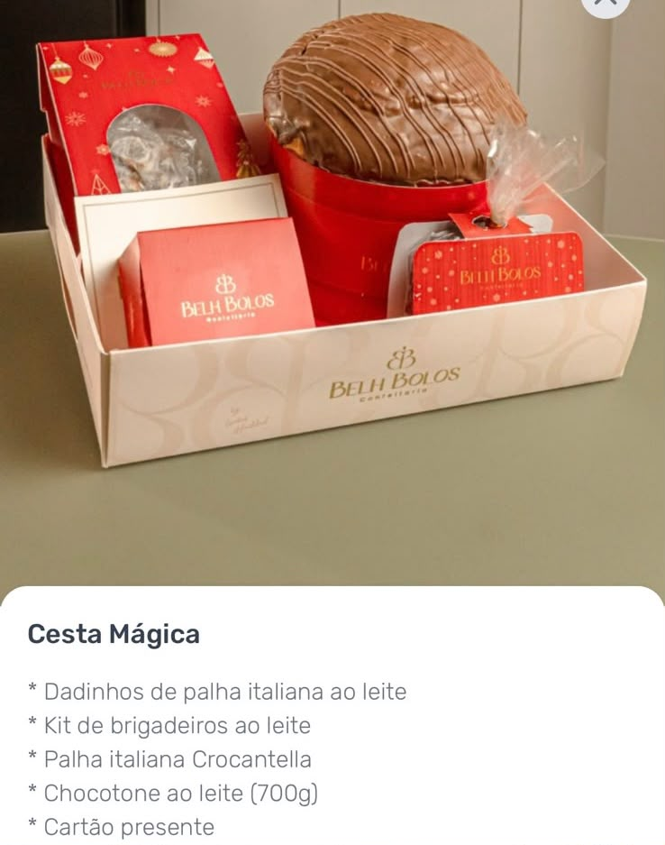
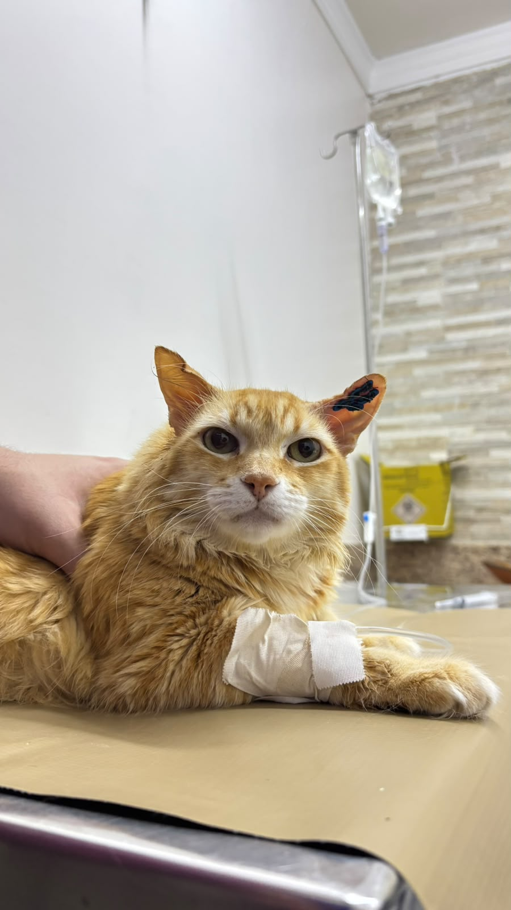
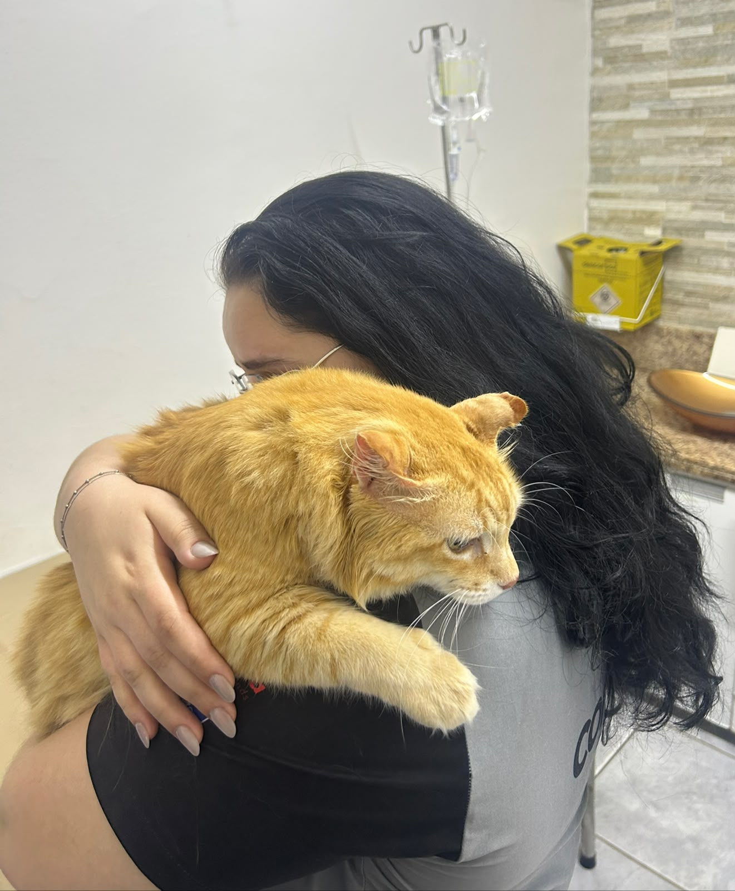

Escolha seu pacote
Uma, duas ou cinco chances de ganhar e contribuir com o tratamento.
Juntos, podemos fazer a diferença no tratamento do Nicolau. Participe da nossa rifa e concorra a uma cesta cheia de coisas boas.
Quero fazer parte ↗
por Belh Bolos


Esse é o Nicolau. E é por ele que essa corrente de amor existe.
A rifa solidária foi criada para ajudar no tratamento do Nicolau. Ao participar, você contribui com os cuidados de que ele precisa e concorre à Cesta Mágica da Belh Bolos.
Uma chance de ganhar um presente especial. Uma oportunidade de fazer parte da história dele.
Quero ajudar o Nicolau ↗Selecione um pacote e descubra seus códigos.
Mais chances para você, mais carinho para o Nicolau.
Escolha um pacote acima para começar.
Cada chance recebe um código aleatório de 5 caracteres, como 74EX2. Usamos letras maiúsculas e números, sem os caracteres 0, O, 1 e I, para facilitar a leitura. Um pacote de 5 chances recebe 5 códigos diferentes. Os códigos e o pacote ficam salvos neste navegador para quando você voltar. Ao trocar os códigos ou o pacote, a seleção salva será substituída. Guarde também o resumo e confirme sua participação com a organização.
Esta é uma prévia da campanha. Os códigos e o pacote ficam salvos apenas neste navegador. Isso não confirma a participação nem envia os códigos para a organização.
A Cesta Mágica da Belh Bolos reúne doces especiais em um presente cheio de carinho. Olha o que vem nela:
Quando a gente
ajuda com o coração,
todo mundo ganha.
TODOS PELO NICOLAU
Uma, duas ou cinco chances de ganhar e contribuir com o tratamento.
Cada chance recebe um código com 5 letras e números, como 74EX2. Você pode gerar outra combinação.
Revise os dados e o pacote na prévia. As reservas reais ainda não estão abertas.
A campanha tem como objetivo arrecadar recursos para o tratamento do Nicolau. Esta versão é uma demonstração e não recebe pagamentos.
O sorteio será no dia . O horário e as regras de participação serão divulgados pela organização.
Ainda não. Guarde o resumo e confirme sua participação com a organização. O navegador guarda seus códigos e seu pacote, mas eles não são enviados à organização. A geração aleatória reduz a chance de repetição; a conferência entre participantes continua dependendo do registro pela organização. Se você limpar os dados do navegador ou usar outro aparelho, sua seleção salva não estará disponível.
Compartilhe a campanha com quem você gosta. Quanto mais pessoas conhecerem a causa, maior poderá ser essa corrente de apoio.
Convide mais pessoas para fazer parte dessa corrente.